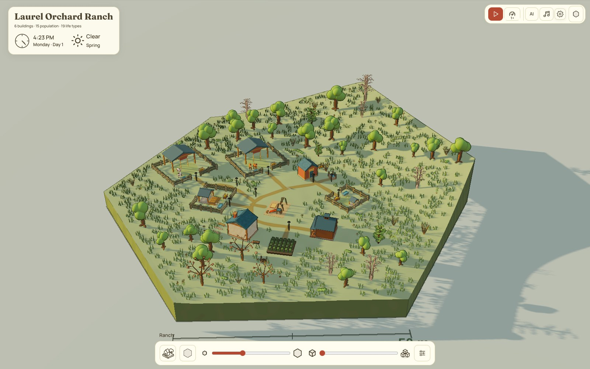
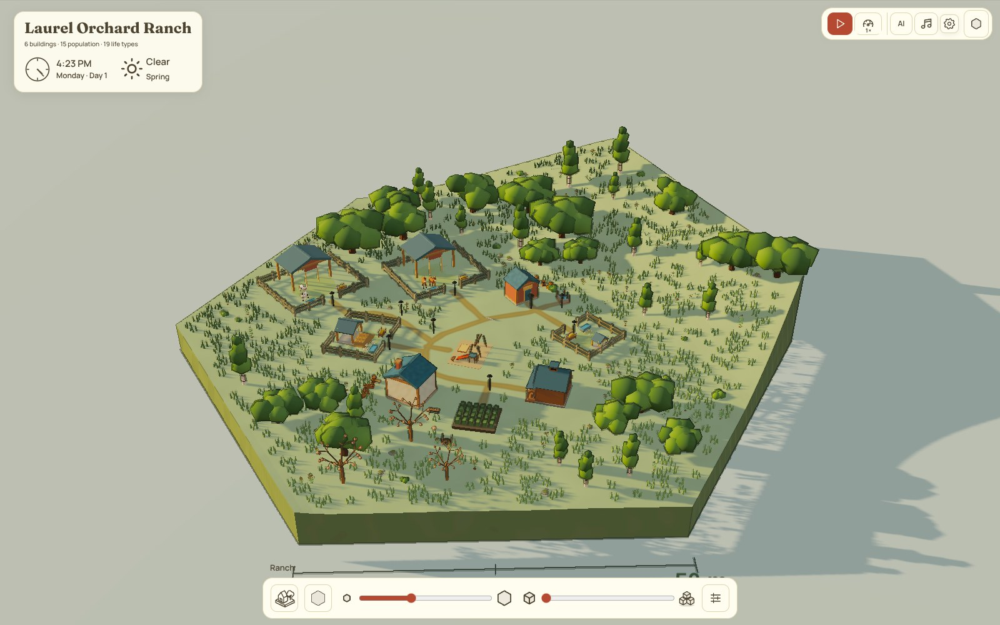
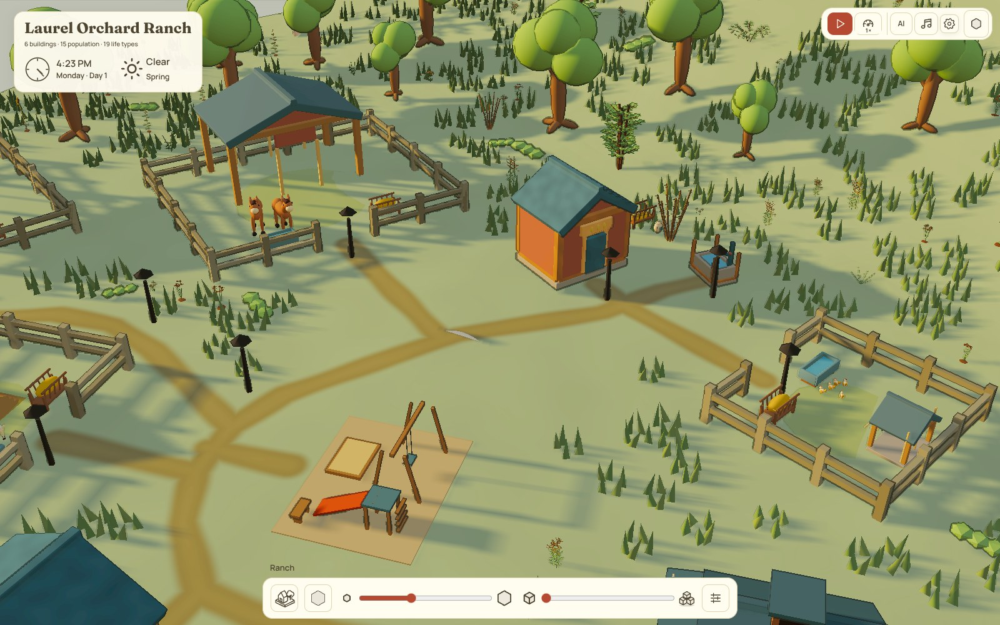
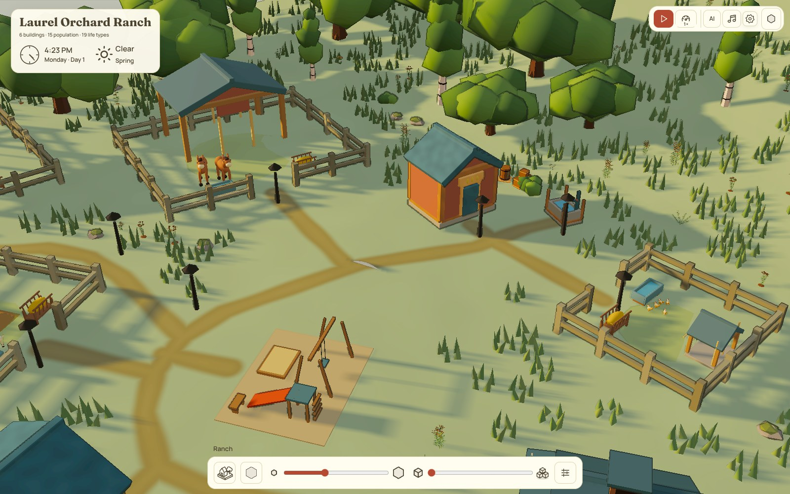
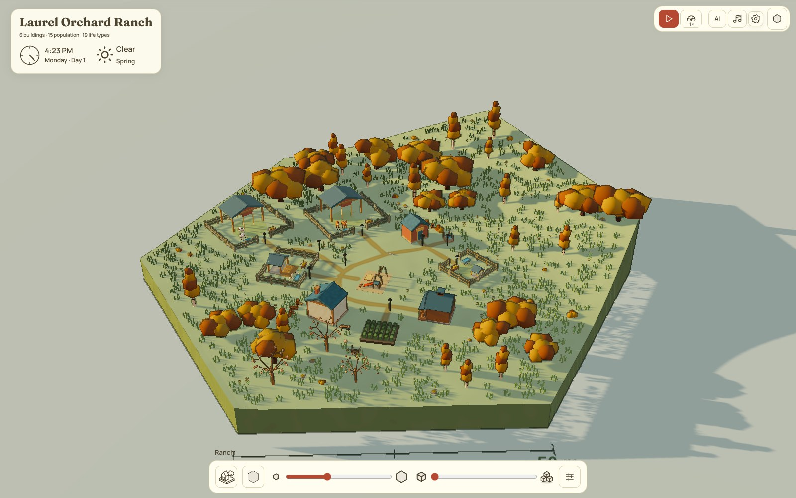
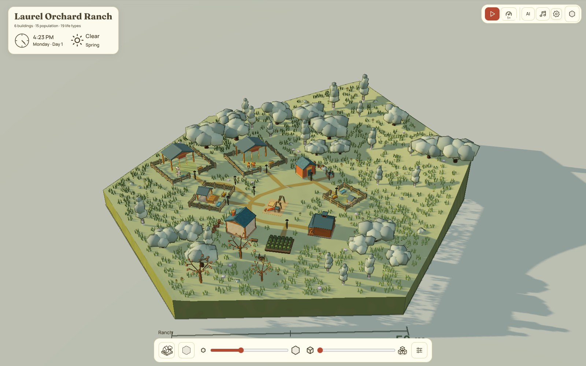

Laurel Orchard Ranch · seed 214 · 4:23 PM
Atelier pack, before and after
The thirteen original trees, bushes, rocks and yard props, rebuilt in the cloud from a Blender script and dropped into the ranch. Same board, same camera, same moment. Only the landscape models changed.
Whole ranch
Drag across the picture. Woods now read as solid masses of low, full crowns, and open ground gets single oaks and birches.


BeforeAfterClose to the barn
Same zoom in both. Look for the barrel, crates and bush beside the shed, the boulders, and the oak and birch edge behind the paddock.


BeforeAfterSame models, other paint
Like Northgard, each model is repainted for a land, not remodelled. Firs keep their green in autumn.


How the shots were kept identical
- Board
- One saved board state, loaded into both runs (seed 214)
- Clock
- 4:23 PM, Monday, day 1, spring. The simulation pauses on its first frame.
- Randomness
- Seeded, so animals and people start in the same places
- Camera
- Default fitted view. The close-up adds four wheel steps at the same point.
- Window
- 1600 × 1000, headless Chromium
- Check
- Two runs of the "before" shot came out pixel for pixel the same
Where the models came from
- Every model is built from Blender primitives by one script,
scripts/atelier-pack/build_pack.py. It uses a fixed seed and takes no outside models or pictures as input. - Each model has its own record with the author, tool and version, the prompt, the date, the script and its hash, the reference studied, and the triangle count.
- Northgard was studied only for proportions and how it repaints: low crowns, flat rocks about half as tall as wide.
- The models are small. Trees are 60 to 260 triangles each, and the biggest prop, the log pile, is 568.
What this is and isn't
- This is a rebuild. Your Oct 22 pack and the
?paintedlook are still only on your PC. The painted look is not in these shots. - It's off unless you add
?atelierto the sandbox address, so the live site hasn't changed. It's on GitHub in PR #40. - It's on in the cloud preview with
?atelier.